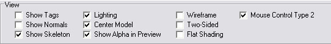

| Changing view options | |
| There are several checkboxes to change the appearance of the model. | |
|  | |
| None of those options change the model, they only toggle the way it looks on screen. You can turn the options on & off at any time. When saving models, the current state of the checkboxes have no effect at all on the model. | |
If a model conatins any tags, this option will toggle them visible/invisible. | |
Toggles the showing of face-normals. | |
If a model contains a skeleton & bones (playermodels), then this option will toggle skeleton-visibility. This option has no effect if no playermodel is loaded. | |
Toggles OpenGL lighting. This option can be very useful when the loaded model has no textures, in that case the model will be drawn all white. That makes it hard to recognize the model because You only see the contour. In case the model has no textures, enable lighting so the model is shaded. | |
This option makes the model fit on screen, and places it in the center of the view. | |
Used in the texture-preview on the 'Surfaces'-tab. It toggles transparency in textures. Of course this only works for textures that have an alpha-channel. | |
Toggles the showing of a wireframe model. | |
Toggles rendering of faces that are viewed from their backside, which You normally would not see. When enabled, this has the same effect as the shader-command: cull none. | |
Toggles smooth/flat shaded models. | |
Toggles the way mouse-dragging will control/rotate the model on the 'View'-Tab. Control Type 2 may be more intuitive, because it will always rotate the model in the same direction as You drag the mouse into. When dragging the mouse, while the right-button is pressed, the model will be rotated around its local axis (X or Z). | |